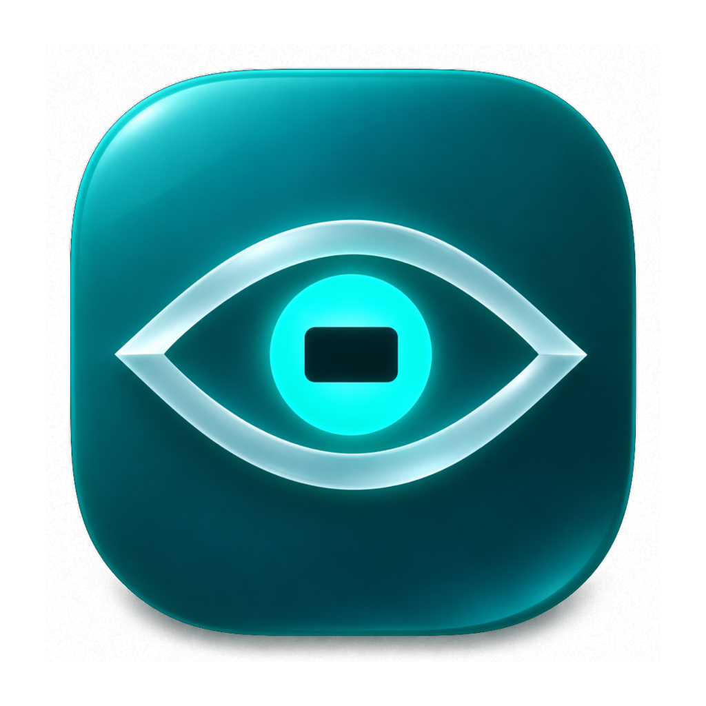
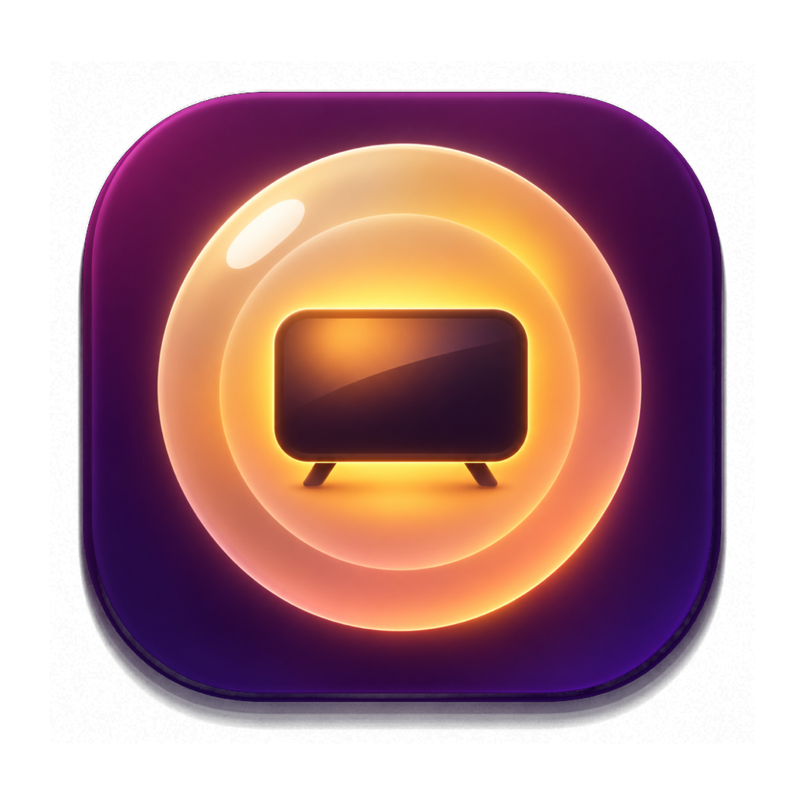
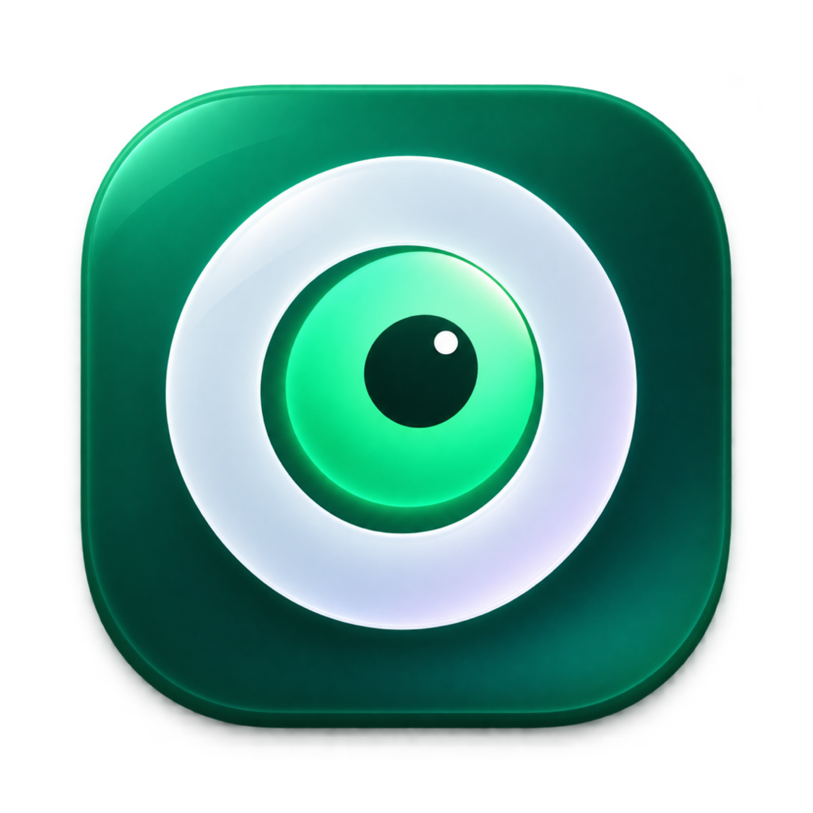

Oculo
Trois pistes de logo pour le client vidéo Android TV. Oculus, c'est l'œil en latin. Deuxième app de la famille « by Arix », à côté de Fenestro : même tuile, même verre dépoli, même lueur, chacune sa couleur.
 Fenestro
Fenestro
A
B
CIris-écran
Géométrique et minimal : un œil en amande de verre dépoli dont la pupille est un petit écran 16:9. Symétrique, calme, lisible à toute taille.
Petites tailles
Bannière Android TV
Aube chaude
Doux et chaleureux : un iris en anneaux de lumière ambrée qui entoure un téléviseur, sur un prune profond. L'ambiance d'un film le soir, la plus « télé » des trois.
Petites tailles
Bannière Android TV
Le O qui regarde
Monogramme audacieux : un O épais en verre dépoli dont le centre est un œil qui jette un regard. Graphique et ludique, le plus reconnaissable en tout petit.
Petites tailles
Bannière Android TV
Sur l'écran d'accueil de la télé
Les trois bannières dans une rangée d'apps, à la taille du lanceur, la piste A sélectionnée.